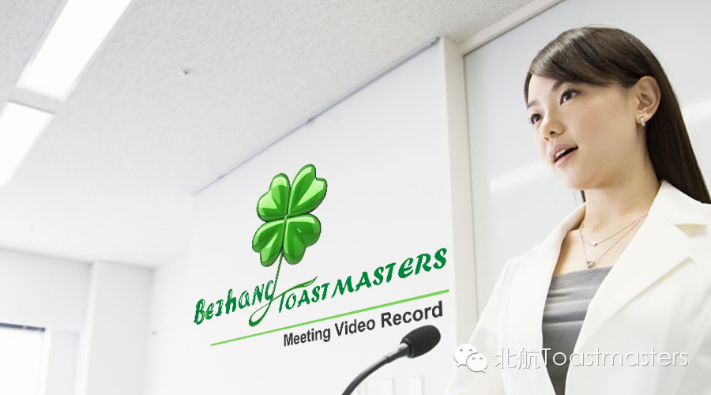

各位晚上好！周末的时间总是格外的短暂，一想到明天，周一厌烦症可别发作了呀。快让我们的会议视频小站给你补充正能量，跟着大V迎接新一周的挑战吧！
Beihang Toastmasters Club 79th Meeting
Toastmaster: Veronica
又是一年最难就业季（奇怪 为什么要说个“又”字），此刻屏幕前的你或许正努力做着第一份实习，或许心满意足地拿着offer唱着歌，又或者已然是驰骋职场数年的老将。进入职场不仅仅意味着身份的转换，更是一次内心的蜕变。这周让我们看看Lucia展现的Workplace Freshman心路历程。
BeihangTMC 79th-TableTopic
Workplace Freshman
Table Topic Master: Lucia
英国的研究人员通过对近千人的调查发现，只有6%的人从事儿时梦想的职业。当我们在生命的匆忙间奔波时，驻足回顾却疑惑10岁时那个满怀想象力和创造力的自己去了哪里？来看看首秀的Grace会给出怎样精彩的答案。
BeihangTMC 79th
Grace-CC1-Where has I gone?
你相信世界上真的存在魔法吗？如果你未曾在生命中遇到真正的魔法，那可别错过了下面的演讲，来自Joshua-Magic。
Beihang TMC 79th
Joshua-CC2-Magic